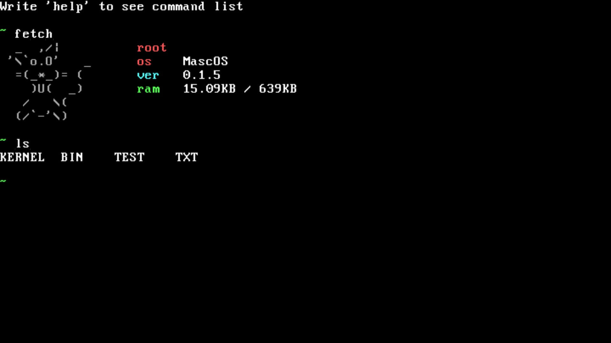
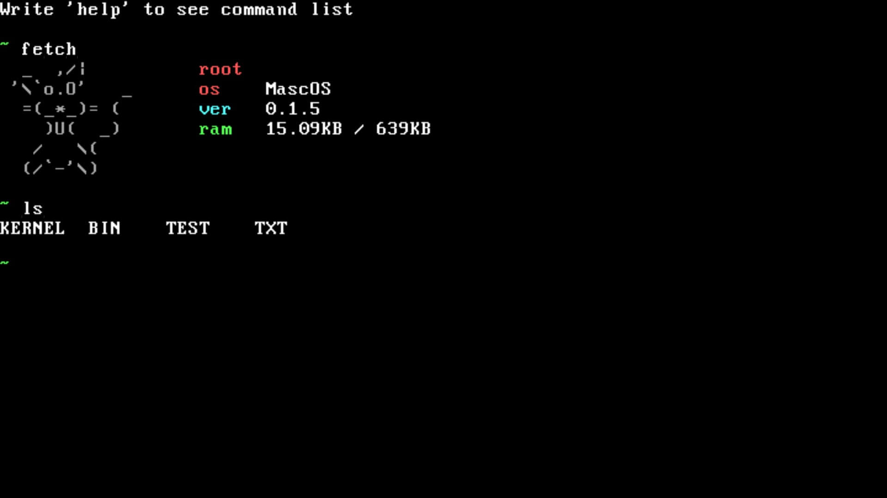

Progetti / MascOS
MascOS è un sistema operativo a 16-bit basato sull’architettura x86, scritto completamente in Assembly.
Ho iniziato questo progetto con l’intento di aumentare e migliorare le mie conoscenze sui sistemi operativi, Assembly e il low level programming in generale. MascOS ha lo scopo di girare su vecchi computer, perfino nell'originale pc IBM, infatti può essere eseguito sul primo processore x86, l'8086 di Intel.
Al momento MascOS ha un semplice bootloader, un kernel che esegue una shell che supporta gli argomenti per i comandi. Il sistema operativo supporta il filesystem FAT12, e ha un suo driver VGA. In futuro supporterò anche VESA, l’interazione dell’os con i drive esterni ed altro. E' stato anche testato su un veri computer tramite floppy disk e funziona.
Link github: https://github.com/leo007er1/MascOS
 
